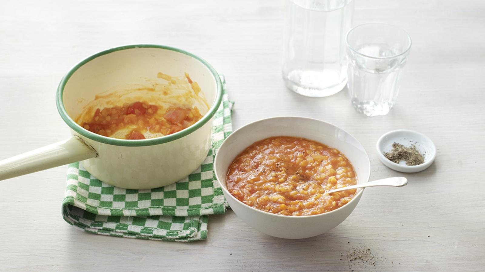

Tomato and Red Lentil Soup
Adapted from the recipe Lentil and Tomato Soup by Fiona Hunter, BBC Good Food.

Description
A filling and hearty lentil and tomato soup that is packed with fibre and provides two of your five-a-day. Why not make double and freeze for future vegan lunches?
Each serving provides 200 kcal, 10g protein, 29g carbohydrate (of which 12.5g sugars), 4g fat (of which 0.5g saturates), 5g fibre and 0.3g salt.
Ingredients
- 1 tsp rapeseed oil
- 1 small onion (75g/2½oz peeled weight), finely chopped
- 1 garlic clove, finely chopped
- 30g/1oz red lentils
- 200g/7oz tinned chopped tomatoes
- 100ml/3½fl oz vegetable stock
- pinch smoked paprika (optional)
- freshly ground black pepper, to taste
Steps
- Heat the oil in a small saucepan over a medium heat. Add the onion and garlic and cook for 2–3 minutes.
- Add the remaining ingredients, including black pepper to taste, and bring to the boil. Reduce the heat and simmer for 20 minutes.
- Serve immediately or leave to cool and store in the fridge or freezer for lunches.